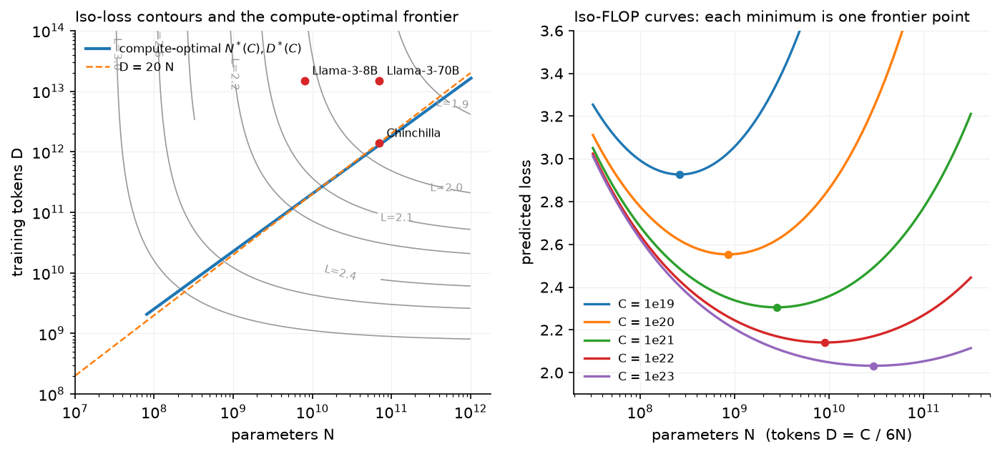

Scaling laws¶
Why this matters at staff level. "You have \(10^{24}\) FLOPs; what do you train?" is the canonical frontier-lab question, and it is also the question every team answers implicitly when it picks a model size for a product. Strong signal is deriving the compute-optimal allocation from the loss surface in five lines, knowing where the 20-tokens-per-parameter rule comes from and where it breaks (repeated data, inference cost), and being able to fit a law from a handful of small runs instead of quoting one.
TL;DR: the interview card¶
- Kaplan et al. (2020): loss is a power law in each of \(N\) (non-embedding parameters), \(D\) (tokens) and \(C\) (compute) over many orders of magnitude; shape (depth/width) matters little at fixed \(N\).
- Hoffmann et al. (Chinchilla, 2022): \(L(N,D) = E + A N^{-\alpha} + B D^{-\beta}\); at fixed \(C = 6ND\) the optimum scales \(N^* \propto C^{a}\), \(D^* \propto C^{b}\) with \(a = \beta/(\alpha+\beta)\), \(b = \alpha/(\alpha+\beta)\). With \(\alpha\approx\beta\), \(a\approx b\approx 0.5\) and \(D^*/N^* \approx 20\) tokens per parameter.
- Chinchilla (70B, 1.4T tokens) beat Gopher (280B, 300B tokens) at the same compute: Gopher was undertrained.
- Training FLOPs \(\approx 6ND\): 2 per parameter per token forward, 4 backward. Inference \(\approx 2N\) per token, forever. That asymmetry is why Llama 3 8B trains on 15T tokens (≈1,900 tokens/param): overtraining a small model buys cheaper serving.
- Data-constrained (Muennighoff et al., 2023): up to ~4 epochs of repetition costs almost nothing; beyond that the value of repeated tokens decays with a fitted constant \(R^*\approx 15\); excess parameters are similarly discounted.
- Fitting: for fixed \((\alpha, \beta)\) the law is linear in \((E, A, B)\); grid the exponents
and solve least squares (what
fit_scaling_lawdoes). Fit on runs spanning ≥2 orders of magnitude of compute, and check that iso-FLOP minima line up. - The parameters printed in the Chinchilla paper for "approach 3" (\(\alpha=0.34\), \(\beta=0.28\)) do not reproduce the 20 tokens/param rule; a 2024 replication re-fit them (\(\alpha\approx 0.35\), \(\beta\approx 0.37\)) and the code defaults to that.
1. Intuition first¶
Suppose you have a budget of \(10^{21}\) FLOPs. You can spend it on a 1B model for \(1.7\times10^{11}\) tokens or a 10B model for \(1.7\times10^{10}\) tokens (same \(6ND\)). The small model sees lots of data but has too little capacity; the big one has capacity but sees too little data. Somewhere between them, at fixed compute, the loss is lowest. Sweep model sizes at fixed compute, plot loss against \(N\), and you get a U-shaped iso-FLOP curve; its minimum is the compute-optimal model for that budget. Do it for several budgets and the minima trace the frontier \(N^*(C)\).

Left: contours of \(L(N,D)\); the blue line is the locus of iso-FLOP minima and runs almost parallel to \(D = 20N\). Chinchilla sits on it; Llama 3 8B and 70B sit far above it (far more tokens than compute-optimal) on purpose. Right: the iso-FLOP curves whose minima define the frontier; note how flat they are near the minimum: a 2× error in \(N\) costs little loss.
Two facts make this useful rather than academic. First, the law is smooth enough that you can fit it on models 100–1000× smaller than the one you intend to train, which is how Llama 3 and DeepSeek-V3 chose their sizes. Second, the flatness near the optimum means you can move off the frontier cheaply when something else, such as serving cost, argues for it.
2. The math¶
2.1 The FLOP count \(C \approx 6ND\)¶
A dense layer with weight \(W \in \R^{d_{in}\times d_{out}}\) applied to one token costs \(2 d_{in} d_{out}\) FLOPs forward (one multiply and one add per weight). Summed over all weights, the forward pass costs \(2N\) FLOPs per token. Backward computes two matmuls of the same size (gradient w.r.t. the input and w.r.t. the weight), so \(4N\). Total per token \(6N\); over \(D\) tokens,
Attention's \(QK^\top\) and \(PV\) add \(\approx 12\,L\,T\,d_{model}\) per token (forward and backward), which is small unless \(T \gtrsim d_{model}\); at long context you add it (this is the correction Llama 3 and DeepSeek-V3 apply when they report FLOPs).
2.2 The Chinchilla loss surface¶
\(E\) is the irreducible loss (the entropy of text under the tokeniser); the second term is the penalty for finite capacity (the best a size-\(N\) model could do with infinite data); the third is the penalty for finite data (the best any model could do having seen \(D\) tokens once). The additive form is an assumption, justified empirically by fits on 400 runs from 70M to 16B parameters.
2.3 Compute-optimal allocation (derive this at the whiteboard)¶
Minimise \(L\) subject to \(6ND = C\). Substitute \(D = C/(6N)\):
Differentiate and set to zero:
What it means: the exponents \(a = \beta/(\alpha+\beta)\) and \(b = \alpha/(\alpha+\beta)\) sum to 1, so compute is split between "more parameters" and "more tokens" in a fixed ratio of exponents. If \(\alpha = \beta\) then \(a = b = 1/2\): double the compute, and multiply both \(N\) and \(D\) by \(\sqrt 2\). The ratio \(D^*/N^* = G^{-2}(C/6)^{b-a}\) is constant in \(C\) exactly when \(\alpha = \beta\); the Chinchilla fits gave \(\approx 20\) over the range they studied.
Kaplan's earlier result (\(N^* \propto C^{0.73}\), so tokens should grow much more slowly than parameters) came from fits that did not tune the learning-rate schedule to the token budget of each run; once the schedule length matches the run, the exponent moves to ≈0.5. That methodological point is the reason two careful papers disagreed, and it is worth saying in an interview.
2.4 The "approach 3" parameters and the 20 tokens/param rule¶
The Chinchilla paper reports three ways of estimating the optimum: (1) fix \(N\), vary \(D\),
find the envelope; (2) iso-FLOP profiles; (3) a parametric fit of \(L(N,D)\) with
\(E=1.69\), \(A=406.4\), \(B=410.7\), \(\alpha=0.34\), \(\beta=0.28\). Plug those into the boxed formula
and you get \(a = 0.28/0.62 = 0.45\), \(b = 0.55\), and at \(C = 5.76\times10^{23}\) (Gopher's
budget) \(N^* \approx 32\)B, not the 70B they trained. Approaches 1 and 2 gave \(a\approx b\approx 0.5\)
and ~70B, which is what Chinchilla used. A 2024 replication (Besiroglu et al., Chinchilla
Scaling: A replication attempt) re-extracted the paper's data and re-fit the parametric
form to \(E\approx1.82\), \(A\approx482\), \(B\approx2085\), \(\alpha\approx0.35\), \(\beta\approx0.37\),
which reproduces ~70B / ~1.3T tokens and \(D^*/N^*\approx 20\). mlbook.llm.scaling_laws keeps
both sets; the default is the re-fit, and the test test_tokens_per_parameter_is_about_twenty
checks both behaviours. Knowing this discrepancy is a good staff-level signal: the rule of
thumb is robust, the printed parameters are not.
2.5 Data-constrained scaling¶
When unique tokens \(U\) are limited and you train for \(D > U\) tokens (repeating), Muennighoff et al. fit
and use \(D'\) in place of \(D\) in the Chinchilla form (with a matching discount for excess parameters). For small \(R_D\), \(D' \approx D\): a few epochs cost nothing. As \(R_D \to \infty\), \(D' \to U(1+R^*) \approx 16U\): no amount of repetition is worth more than ~16 unique-token equivalents. Their empirical summary is that up to ~4 epochs are nearly free and past ~40 the returns are gone. Consequence: when data is the constraint, the compute-optimal model is smaller and trained for more epochs than the unique-data law suggests.
2.6 Inference-aware scaling¶
Training is paid once; inference is paid per generated token, \(\approx 2N\) FLOPs each. If you will serve \(S\) tokens over the model's life, the lifetime cost is
Minimising loss at fixed \(C_{\text{life}}\) pushes toward smaller \(N\) and larger \(D\) as \(S\) grows, i.e. overtraining. This is the argument (formalised in Sardana et al., 2024, Beyond Chinchilla-Optimal) behind Llama 3 8B on 15T tokens: a compute-optimal 8B model would use ~160B tokens; the extra training compute buys a model that is far better than compute-optimal 8B and cheaper to serve than the 70B that matches its quality. The iso-FLOP curves are flat near the optimum, so the training-side loss is modest.
3. Implementation¶
def compute_optimal(C, p=CHINCHILLA_FIT):
a = p.beta / (p.alpha + p.beta)
b = p.alpha / (p.alpha + p.beta)
G = (p.alpha * p.A / (p.beta * p.B)) ** (1.0 / (p.alpha + p.beta))
N_star = G * (C / 6.0) ** a
D_star = (C / 6.0) ** b / G
return N_star, D_star
This is the boxed result, verbatim. The test builds an iso-FLOP curve numerically and checks
that its argmin matches N_star within 1%, which is the check you should run whenever you
re-fit parameters.
def fit_scaling_law(N, D, L, alpha_grid=None, beta_grid=None):
for alpha in alpha_grid:
for beta in beta_grid:
X = np.stack([np.ones_like(N), N**-alpha, D**-beta], axis=1) # (n_runs, 3)
coef, *_ = np.linalg.lstsq(X, L, rcond=None) # (3,) = [E, A, B]
if np.any(coef < 0):
continue
err = float(np.sum((X @ coef - L) ** 2))
... # keep the best (E, A, B, alpha, beta)
For fixed exponents the model is linear in \((E, A, B)\) with features \([1, N^{-\alpha}, D^{-\beta}]\), so least squares is exact; a grid over \((\alpha, \beta)\) replaces the L-BFGS-on-Huber-loss fit of the paper and is more robust on ten data points. The test generates ten synthetic runs with \(10^{-3}\) noise and recovers exponents within 0.03 and \(E\) within 0.05, then checks the extrapolation to a 5B model within 0.02 nats. When fitting real runs, use the final loss of each run after its learning-rate decay finished, and span at least two decades of compute.
Full implementation: src/mlbook/llm/scaling_laws.py
"""Neural scaling laws: the Chinchilla parametric form, compute-optimal allocation,
and fitting a law to a handful of small runs (pure NumPy).
L(N, D) = E + A / N^alpha + B / D^beta (Hoffmann et al. 2022, approach 3)
C ≈ 6 N D training FLOPs for a dense Transformer (2 fwd + 4 bwd per param per token)
Minimising L subject to C = 6ND gives (derivation in the chapter)
N*(C) = G (C/6)^a, D*(C) = G^{-1} (C/6)^b,
a = beta / (alpha + beta), b = alpha / (alpha + beta),
G = (alpha A / (beta B))^{1 / (alpha + beta)}.
"""
from __future__ import annotations
from dataclasses import dataclass
import numpy as np
@dataclass(frozen=True)
class ChinchillaParams:
"""Parameters of L(N, D) = E + A N^-alpha + B D^-beta."""
E: float
A: float
B: float
alpha: float
beta: float
# Fitted values as printed in Hoffmann et al. (2022), "approach 3" (their eq. 10).
# NOTE: with these exponents the closed-form optimum gives N* ∝ C^0.46 and ~50+
# tokens/parameter at 1e21 FLOPs, *not* the "20 tokens per parameter" rule that
# came from approaches 1 and 2 of the same paper. Besiroglu et al. (2024,
# "Chinchilla Scaling: A replication attempt") re-fit the same data and obtained
# the second parameter set below, which is consistent with all three approaches
# and with the actual Chinchilla configuration (70B params, 1.4T tokens).
CHINCHILLA_PAPER_FIT = ChinchillaParams(E=1.69, A=406.4, B=410.7, alpha=0.34, beta=0.28)
CHINCHILLA_REFIT = ChinchillaParams(E=1.8172, A=482.01, B=2085.43, alpha=0.3478, beta=0.3658)
CHINCHILLA_FIT = CHINCHILLA_REFIT # default used throughout the chapter
def chinchilla_loss(N: np.ndarray, D: np.ndarray, p: ChinchillaParams = CHINCHILLA_FIT) -> np.ndarray:
"""Predicted loss for parameters ``N`` and tokens ``D`` (broadcast, any shape)."""
N = np.asarray(N, dtype=float)
D = np.asarray(D, dtype=float)
return p.E + p.A / N**p.alpha + p.B / D**p.beta
def training_flops(N: float, D: float) -> float:
"""C ≈ 6 N D: 2 FLOPs/param/token forward, 4 backward (dense Transformer)."""
return 6.0 * N * D
def compute_optimal(C: float, p: ChinchillaParams = CHINCHILLA_FIT) -> tuple[float, float]:
"""Compute-optimal (N*, D*) for a FLOP budget ``C`` under ``L(N, D)`` and ``C = 6ND``.
Returns:
(N_star, D_star) in parameters and tokens.
"""
a = p.beta / (p.alpha + p.beta)
b = p.alpha / (p.alpha + p.beta)
G = (p.alpha * p.A / (p.beta * p.B)) ** (1.0 / (p.alpha + p.beta))
N_star = G * (C / 6.0) ** a
D_star = (C / 6.0) ** b / G
return N_star, D_star
def tokens_per_parameter(C: float, p: ChinchillaParams = CHINCHILLA_FIT) -> float:
"""D*/N* at budget ``C`` (≈ 20 for the Chinchilla fit around 1e21–1e24 FLOPs)."""
N_star, D_star = compute_optimal(C, p)
return D_star / N_star
def loss_at_fixed_compute(C: float, N: np.ndarray, p: ChinchillaParams = CHINCHILLA_FIT) -> np.ndarray:
"""Loss along an iso-FLOP curve: D = C / (6N) for each ``N`` (the 'IsoFLOP' view)."""
N = np.asarray(N, dtype=float)
D = C / (6.0 * N)
return chinchilla_loss(N, D, p)
def fit_scaling_law(
N: np.ndarray, D: np.ndarray, L: np.ndarray, alpha_grid=None, beta_grid=None
) -> ChinchillaParams:
"""Fit ``E, A, B, alpha, beta`` to observed (N, D, L) triples from small runs.
For fixed exponents the model is *linear* in ``(E, A, B)`` with features
``[1, N^-alpha, D^-beta]``, so we solve least squares in closed form and grid
search the two exponents. Robust, dependency-free, and good enough for the
handful of points you get from a scaling sweep.
Args:
N, D, L: (n_runs,) arrays of parameter counts, token counts, final losses.
Returns:
the best ChinchillaParams (lowest squared error).
"""
N = np.asarray(N, dtype=float)
D = np.asarray(D, dtype=float)
L = np.asarray(L, dtype=float)
alpha_grid = np.linspace(0.1, 0.9, 41) if alpha_grid is None else alpha_grid
beta_grid = np.linspace(0.1, 0.9, 41) if beta_grid is None else beta_grid
best: tuple[float, ChinchillaParams] | None = None
for alpha in alpha_grid:
for beta in beta_grid:
X = np.stack([np.ones_like(N), N**-alpha, D**-beta], axis=1) # (n_runs, 3)
coef, *_ = np.linalg.lstsq(X, L, rcond=None) # (3,) = [E, A, B]
if np.any(coef < 0): # E, A, B must be positive to be a scaling law
continue
err = float(np.sum((X @ coef - L) ** 2))
if best is None or err < best[0]:
best = (err, ChinchillaParams(coef[0], coef[1], coef[2], float(alpha), float(beta)))
assert best is not None
return best[1]
def fit_power_law(x: np.ndarray, y: np.ndarray) -> tuple[float, float]:
"""Kaplan-style single-variable fit ``y = c x^-k`` by linear regression in log-log.
Returns:
(c, k).
"""
lx, ly = np.log(np.asarray(x, float)), np.log(np.asarray(y, float))
k, logc = np.polyfit(lx, ly, deg=1) # slope, intercept
return float(np.exp(logc)), float(-k)
def effective_data_with_repetition(D: float, U: float, R_star: float = 15.0) -> float:
"""Data-constrained scaling (Muennighoff et al. 2023): effective unique tokens.
With ``U`` unique tokens trained for ``D/U`` epochs, the ``R_D = D/U - 1``
repeated passes are worth ``D' = U + U R* (1 - exp(-R_D / R*))`` unique tokens;
``R* ≈ 15`` is their fitted decay constant. Up to ~4 epochs, ``D' ≈ D``.
"""
if D <= U:
return D
R_D = D / U - 1.0
return U + U * R_star * (1.0 - np.exp(-R_D / R_star))
def inference_flops_per_token(N: float) -> float:
"""≈ 2N FLOPs per generated token (one forward pass, ignoring attention)."""
return 2.0 * N
def lifetime_cost_flops(N: float, D_train: float, tokens_served: float) -> float:
"""Training plus inference FLOPs, the quantity inference-aware scaling minimises."""
return training_flops(N, D_train) + inference_flops_per_token(N) * tokens_served
How you'd test it. Argmin agreement with the closed form; tokens-per-parameter in the
15–30 band for the refit and outside it for the printed parameters; a synthetic fit-recovery
test; effective_data_with_repetition saturating below \(17U\).
Retype by hand¶
| Symbol | File | Target time |
|---|---|---|
compute_optimal (with the derivation) |
src/mlbook/llm/scaling_laws.py |
10 minutes |
fit_scaling_law |
src/mlbook/llm/scaling_laws.py |
15 minutes |
Fine to just read: chinchilla_loss, loss_at_fixed_compute, fit_power_law,
effective_data_with_repetition, lifetime_cost_flops.
Check with python -m pytest tests/test_llm_scaling.py -q
(test_compute_optimal_is_the_argmin_on_the_isoflop_curve,
test_fit_scaling_law_recovers_parameters_from_small_runs).
4. Systems view: cost, failure modes, trade-offs¶
What a scaling sweep costs. To fit the law for a \(10^{24}\)-FLOP run you train perhaps 20 models between \(10^{19}\) and \(10^{22}\) FLOPs. That sweep costs about 1–3% of the final run; it is the cheapest insurance you can buy against training the wrong size. Llama 3 reports exactly this structure, with a two-stage fit: compute → optimal tokens, then loss → benchmark accuracy, so they could predict downstream scores of the 405B model from small runs.
Failure modes of extrapolation.
| Failure | Why | Mitigation |
|---|---|---|
| Learning-rate schedule not matched to run length | inflates loss of short runs, biases exponents toward Kaplan | cosine (or WSD) schedule per run; compare final losses only |
| Mixing tokenisers/datasets across runs | \(E\) and \(B\) change | fix the data pipeline before the sweep |
| Fitting only on runs near one compute | exponents unidentifiable | ≥2 decades of \(C\) |
| Ignoring attention FLOPs at long context | \(6ND\) undercounts by 10–30% | add \(12\,L\,T\,d\) per token |
| Trusting the law for downstream tasks | emergent-looking curves come from discontinuous metrics | fit loss, then map loss → accuracy with a sigmoid on the same runs |
| Repeated data | unique-token law overestimates value of epochs \(>4\) | use the data-constrained form |
When to use what.
| Situation | Decision rule |
|---|---|
| One-off research model, no serving | train at the Chinchilla optimum (\(D \approx 20N\)) |
| Product model served at scale | pick \(N\) by latency/cost target, then train as long as the loss keeps falling (often 100–2000 tokens/param) |
| Data-limited domain (e.g. a language with 50B tokens) | smaller model, 4–10 epochs, use the Muennighoff correction |
| Deciding MoE vs dense at fixed budget | scaling laws in active parameters; MoE moves the frontier (chapter 3) |
| Budgeting a sweep | 1–3% of the target run across ≥2 decades of compute |
5. In production¶
DeepMind: Chinchilla
Problem: Gopher (280B) had been trained on 300B tokens following Kaplan-style allocation. Hoffmann et al. re-ran the analysis with matched schedules on >400 models and concluded parameters and tokens should scale equally. They trained Chinchilla (70B, 1.4T tokens) at the same compute and it outperformed Gopher across the board. Rejected alternative: the Kaplan allocation, which would have kept growing parameters. Gain: a 4× smaller model (cheaper inference) at equal cost with better quality. Source: Training Compute-Optimal Large Language Models.
Meta: Llama 3 sizing
Llama 3 ran its own scaling-law study with runs from \(6\times10^{18}\) to \(10^{22}\) FLOPs and reports that at their flagship budget (\(3.8\times10^{25}\) FLOPs) the compute-optimal model is about 402B parameters on 16.55T tokens, which is why the 405B model was trained on about 15T tokens. The 8B and 70B models were trained on the same ~15T tokens, far beyond compute-optimal, because inference economics dominate at those sizes. They also observed that the iso-FLOP curves are flat near the optimum, making that choice cheap. Source: The Llama 3 Herd of Models.
Hugging Face et al.: data-constrained scaling
Muennighoff et al. trained up to 9B-parameter models with up to 900B tokens of repeated data and fit the repetition-discount law of §2.5. The result that matters operationally: ≈4 epochs are free, and when unique data is scarce you should train a smaller model for more epochs rather than pad the corpus with lower-quality text. Source: Scaling Data-Constrained Language Models.
DeepSeek: scaling for MoE
DeepSeek-V3's report describes choosing hyperparameters and the token budget using scaling experiments on smaller MoE models, and validates its multi-token-prediction and aux-loss-free choices with ablations at 15B and 200B+ total-parameter scales. The literacy point: for MoE the law is fit in activated parameters and FLOPs, and the total parameter count is a memory decision, not a compute one. Source: DeepSeek-V3 Technical Report.
6. Interview questions and strong answers¶
Derive the compute-optimal model size for a fixed FLOP budget.
Write \(L = E + AN^{-\alpha} + BD^{-\beta}\), substitute \(D = C/6N\), differentiate in \(N\) and set to zero; \(N^{\alpha+\beta} \propto C^{\beta}\), so \(N^* \propto C^{\beta/(\alpha+\beta)}\) and \(D^* \propto C^{\alpha/(\alpha+\beta)}\). With \(\alpha\approx\beta\), both scale as \(\sqrt C\) and the tokens-per-parameter ratio is constant, about 20. Staff follow-up: What if \(\alpha > \beta\)? Then \(b > a\): as compute grows, tokens should grow faster than parameters; data becomes the binding constraint sooner.
Why did Llama 3 8B train on 15T tokens when Chinchilla says 160B?
Chinchilla optimises training loss per training FLOP; a product model is served billions of times, and inference costs \(2N\) per token. With lifetime cost \(6ND + 2NS\), large \(S\) pushes toward smaller \(N\) and larger \(D\). The iso-FLOP curve is flat, so overtraining wastes little, and the resulting 8B is both better than the compute-optimal 8B and much cheaper to serve than a 70B of equal quality. Staff follow-up: When does it stop paying? When the loss curve at fixed \(N\) flattens toward \(E + AN^{-\alpha}\); you can read that asymptote off the law.
You have 100B unique tokens in your domain and a \(10^{22}\) budget. Plan the run.
The unique-data law says \(D^* \approx 1\)T tokens for that budget, so I am data-limited by 10×. Using the repetition discount, 4 epochs (400B tokens) are nearly free and ~10 are still useful; I would train a smaller model (a few billion parameters) for 5–10 epochs, reserve compute for a mixed-in general corpus to prevent forgetting, and validate on held out domain text plus general benchmarks. Staff follow-up: Would synthetic data help? It counts as new tokens only to the extent it is not a paraphrase; measure by whether it moves held-out loss like unique data does.
How would you fit a scaling law from small runs, and what would make you distrust it?
Train ~20 models across ≥2 decades of compute with per-run learning-rate schedules, record final losses, and fit \(E, A, B, \alpha, \beta\) (grid over exponents, least squares for the rest). I would distrust it if iso-FLOP minima do not line up with the closed form, if the fit needs runs outside the range I care about to be stable, or if the dataset/tokeniser changed mid-sweep. Staff follow-up: Loss vs downstream? Fit loss first, then a sigmoid from loss to accuracy on the same runs; Llama 3 does this.
Why do Kaplan and Chinchilla disagree on the exponent?
Kaplan fixed a learning-rate schedule length across runs, so short runs were evaluated before decay and looked worse, biasing the fit toward "parameters matter more". Chinchilla matched schedules to run lengths and included larger data. Methodology, not physics. Staff follow-up: Which should you trust for MoE, or for a new modality? Neither blindly; re-fit with the same protocol.
7. Exercises¶
-
★ For \(C = 10^{22}\), compute \(N^*\), \(D^*\) and \(D^*/N^*\) with the default parameters, then with the printed approach-3 parameters. Explain the difference in one sentence.
Solution
The refit gives ≈20 tokens/param. The printed parameters have \(\beta < \alpha\), so \(a = \beta/(\alpha+\beta) = 0.45\) and \(b = 0.55\): tokens grow faster than parameters, the tokens/param ratio grows with compute, and it exceeds 50 here. The difference is a fitting artefact, not a different law.from mlbook.llm.scaling_laws import compute_optimal, CHINCHILLA_FIT, CHINCHILLA_PAPER_FIT for p in (CHINCHILLA_FIT, CHINCHILLA_PAPER_FIT): N, D = compute_optimal(1e22, p); print(f"{N:.3g} {D:.3g} {D/N:.1f}") -
★★ Show that if \(\alpha = \beta\) then \(D^*/N^*\) is independent of \(C\) and equals \((B/A)^{1/\alpha}\) (with the \(\alpha A/\beta B\) factor collapsing).
Solution
With \(\alpha=\beta\), \(a=b=1/2\) and \(G = (A/B)^{1/2\alpha}\). Then \(D^*/N^* = G^{-2}(C/6)^{0} = (B/A)^{1/\alpha}\). For the refit parameters that is \((2085/482)^{1/0.357}\approx 60\) before accounting for \(\alpha\ne\beta\); the actual ratio ≈20 comes from the small exponent difference, which is why the rule of thumb is only approximately constant.
-
★★ (coding) Use
lifetime_cost_flopsto find, for \(S = 10^{13}\) served tokens and training budget choices, the \(N\) that minimises loss at fixed lifetime cost \(10^{24}\). Compare with the Chinchilla-optimal \(N\) at \(C=10^{24}\).Solution
The inference-aware optimum is several times smaller than the training-only optimum.import numpy as np from mlbook.llm.scaling_laws import chinchilla_loss, compute_optimal S, C_life = 1e13, 1e24 Ns = np.logspace(8, 11.5, 400) Ds = (C_life - 2 * Ns * S) / (6 * Ns) # tokens affordable after inference ok = Ds > 0 L = chinchilla_loss(Ns[ok], Ds[ok]) print(Ns[ok][np.argmin(L)], compute_optimal(C_life)[0]) -
★★★ A colleague proposes to fit the law using loss at a fixed step count for every run, before learning-rate decay. Explain quantitatively (using the WSD schedule idea) why that biases \(\alpha\) upward, and propose a fix that keeps the sweep cheap.
Solution
Loss before decay overestimates final loss by an amount that shrinks with more tokens; the bias is largest for short runs, i.e. small \(D\), so the data term looks steeper and the exponents shift as in Kaplan. Fix: use a warmup-stable-decay schedule, branch a short decay (10–20% of steps) from checkpoints at several token counts of one stable run, and use those decayed losses as the data points. One stable run yields a whole \(L(D)\) curve for its \(N\) at ~1.2× the cost.
References¶
- Kaplan et al. Scaling Laws for Neural Language Models. 2020. arXiv:2001.08361
- Hoffmann et al. Training Compute-Optimal Large Language Models. NeurIPS 2022. arXiv:2203.15556
- Muennighoff et al. Scaling Data-Constrained Language Models. NeurIPS 2023. arXiv:2305.16264
- Meta AI. The Llama 3 Herd of Models. 2024. arXiv:2407.21783
- DeepSeek-AI. DeepSeek-V3 Technical Report. 2024. arXiv:2412.19437
- Besiroglu et al. Chinchilla Scaling: A replication attempt. 2024. arXiv:2404.10102
- Sardana et al. Beyond Chinchilla-Optimal: Accounting for Inference in Language Model Scaling Laws. ICML 2024. arXiv:2401.00448
- Hu et al. MiniCPM: Unveiling the Potential of Small Language Models with Scalable Training Strategies. 2024. arXiv:2404.06395 (WSD schedule and scaling with it)